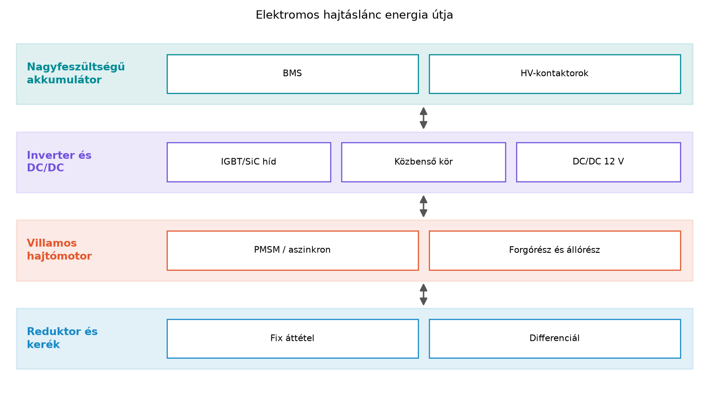

Egy hibrid vagy elektromos jármű az olajcsere és a légszűrő világánál sokkal kevesebb gondozást igényel, de amikor megjelenik egy „Rendszerhiba, csökkentett teljesítmény” vagy „12 V akkumulátor nem töltődik” panasz, a szerelőnek pontosan kell látnia, merre folyik az energia. Ebben az alfejezetben az akkumulátortól a kerékig vezető nagyfeszültségű útra és a visszafelé, a fékezéskor megvalósuló energia-visszanyerésre koncentrálunk. Azt is megértjük, miért van szükség a modern elektromos autóban ugyanúgy 12 V-os hálózatra, és miért veszélyes a narancssárga kábelköteg akkor is, ha a jármű ki van kapcsolva.
Képzelj el egy elektromos hajtásláncot: a padló alatt lévő nagyfeszültségű akkumulátor egyenáramot ad, a motor fölött elhelyezkedő inverter ebből háromfázisú váltakozó áramot készít, a hajtómotor pedig ezt mechanikus forgássá alakítja. A forgást egy egyszerű reduktor viszi át a kerekekre. Fékezéskor a folyamat megfordul: a kerék forgatja a motort, amely generátorként dolgozik, az inverter egyenirányít, és a visszanyert energia visszaáramlik az akkumulátorba.

Ez a rétegábra a kétirányú energiautat mutatja: akkumulátor → inverter → motor → reduktor → kerék, visszafelé pedig kerék → motor (generátor üzem) → inverter (egyenirányító üzem) → akkumulátor.
Definíció. Hajtómotor. Az elektromos hajtású járműben a kerékhajtást végző villamos gép. Az autóiparban leggyakrabban háromfázisú váltakozó áramú motorokat használnak: állandó mágneses szinkronmotor (PMSM, permanent magnet synchronous motor), aszinkron motor (induction motor), ritkábban gerjesztett szinkronmotor (externally excited synchronous motor). A motor nyomatéka az állórész mezője és a forgórész mágneses tere közötti erőhatásból származik.
Definíció. Inverter. Az inverter (átalakító) a nagyfeszültségű egyenfeszültségből három, egymástól 120°-kal eltolt fázisú váltakozó feszültséget állít elő, a motor fordulatszámának és nyomatékigényének megfelelően. A kapcsolóelemek (IGBT vagy SiC MOSFET) gyorsan ki- és bekapcsolják a feszültséget, az így kapott impulzusszélesség-modulált (PWM) jel a motor induktivitásán keresztül közelítőleg szinuszos áramot eredményez.
Definíció. DC/DC átalakító. Olyan feszültségátalakító, amely a nagyfeszültségű akkumulátor feszültségét (jellemzően több száz volt, típusonként ellenőrizendő) a 12 V-os fedélzeti hálózat számára megfelelő, kb. 13,5–14,5 V feszültséggé alakítja. Az elektromos jármű ezen keresztül tölti a 12 V-os akkumulátort és táplálja a hagyományos fogyasztókat.
Definíció. Regeneratív fékezés (rekuperáció). A jármű mozgási energiájának visszanyerése úgy, hogy a hajtómotor generátoros üzemmódban fékező nyomatékot fejt ki, a keletkező villamos energiát az inverter egyenirányítja, és az akkumulátorba tölti.
Összefüggés. Az energiaátalakítás teljesítménye a hajtásláncban:
ahol az akkumulátorból felvett egyenáramú teljesítmény, a kerekeken leadott mechanikus teljesítmény, az tényezők az egyes részegységek hatásfokai. A gyakorlatban egyszerűbb átlagos hatásfokkal számolni, de részegységenként is lehetséges.
Az elektromos járművek motorjának három fő típusa van. Az állandó mágneses szinkronmotor (PMSM) forgórésze neodímium- vagy más ritkaföldfém-mágneseket tartalmaz, így a forgórész mágneses tere állandó. Az állórész háromfázisú tekercselésű, a forgó mágneses mező húzza magával a forgórészt, ezért a motor fordulatszáma szinkronban van a mezővel. A PMSM nagy teljesítménysűrűségű, kiváló hatásfokú, ezért a legelterjedtebb. Hátránya a ritkaföldfém-alapú mágnesek ára és a magas fordulatszámon növekvő veszteség.
Az aszinkron motor forgórésze rövidrezárt kalickás tekercselésű, tehát nincs benne állandó mágnes. Az állórész forgó mezeje feszültséget indukál a kalickában, az indukált áram és a mező kölcsönhatása hozza létre a nyomatékot. Az aszinkron motor olcsóbb, mágneseket nem igényel, és nagy fordulatszámon is jól szabályozható. Hatásfoka valamivel alacsonyabb, mint a PMSM-é, ezért gyakran kiegészítő motorként vagy nagyobb teljesítményű, összkerékhajtású jármű hátsó hajtásánál alkalmazzák.
A gerjesztett szinkronmotor forgórészében tekercs van, amelyet csúszógyűrűn vagy indukciós úton táplálnak. A gyártók azért választják néha, mert nincs ritkaföldfém-mágnes, és a gerjesztést terhelés szerint szabályozva a motor hatásfoka széles tartományban kedvező maradhat. A csúszógyűrűk kopó alkatrészek, ezért a karbantartási igény valamivel nagyobb.
A hajtómotor rendszerint nem közvetlenül a kerékhez kapcsolódik: egy egyszerű, egyfokozatú reduktor (fix áttételű fogaskerékpár) csökkenti a motor fordulatszámát és növeli a nyomatékot. A reduktor elláthatja a differenciálmű feladatát is. A motor fordulatszáma gyakran eléri a 12 000–18 000 1/min értéket, ezért a reduktor áttétele jellemzően 8:1–10:1 (ellenőrizendő: járműtípus adata).
Az inverter felépítése három félhídból áll, mindegyik fázisra kettő-kettő kapcsoló félvezetővel. A vezérlő mikrokontroller a motor szöghelyzetét és az áramokat folyamatosan méri, és a kapcsolókat PWM jellel vezérli. A kívánt nyomaték alapján az inverter beállítja az áram nagyságát, a fordulatszám alapján pedig a feszültség frekvenciáját: ez a mezőorientált (vektoros) szabályozás lényege.
Az inverterben a bemeneti oldalon nagy kapacitású közbenső kör kondenzátorok simítják az egyenfeszültséget, és feszültségcsúcsokat nyelnek el. A kondenzátorok a jármű kikapcsolása után is életveszélyes töltést tarthatnak, ezért a feszültségmentesítésnél a gyártó szerinti várakozási idő és a feszültségmentesség külön mérése kötelező. A modern inverterek passzív kisütő ellenállásokat és gyors kisütési funkciót is tartalmaznak, de erre nem szabad vakon hagyatkozni.
A kapcsolóelemek hagyományosan IGBT (bipoláris tranzisztor szigetelt kapuval), újabban szilícium-karbid (SiC) MOSFET eszközök. A SiC kisebb kapcsolási veszteségű, magasabb hőmérsékletet bír, és kisebb hűtési igényű, ezért a nagyobb hatásfokú, hosszabb hatótávú járművekben egyre gyakoribb.
Az ábra figyelmeztetése a legfontosabb műhelyi szabály: a DC-köri kondenzátor a lekapcsolás után is töltött lehet, ezért az inverter fedelét csak a gyártói várakozási idő és a feszültségmentesség mérése után, jogosult személy nyithatja. Az interaktív változatban a hűtés, a HV-részek és a panelek rétegként kapcsolhatók, rámutatásra az elem neve jelenik meg.
HV-biztonság. A nagyfeszültségű rendszeren – így az inverteren, a hajtómotoron, a DC/DC átalakítón és a narancssárga kábelkötegen – csak arra kiképzett, jogosult személy dolgozhat. Minden munka előtt el kell végezni a gyártói feszültségmentesítést: jogosultság és szigetelő kesztyű ellenőrzése, munkaterület lezárása, gyújtás ki, 12 V-os akkumulátor lekötése, HV-leválasztó eltávolítása és visszakapcsolás elleni biztosítása, a gyártói várakozási idő letelte, majd a feszültségmentesség mérése megfelelő mérési kategóriájú (CAT III, ellenőrizendő) műszerrel. A műszert mérés előtt és után ismert feszültségforráson ellenőrizni kell, az eredményt dokumentálni.
Az elektromos jármű vezérlőegységei, biztonsági rendszerei, világítása, ablakemelői, rádiója és számos érzékelője 12 V-ról működik. A nagyfeszültségű akkumulátor feszültsége ehhez túl magas, ezért a DC/DC átalakító a HV-feszültséget galvanikusan leválasztott, stabil 12 V-os hálózati feszültséggé alakítja, és tölti a 12 V-os akkumulátort. A DC/DC átalakító a HV-rendszer egyik legfontosabb eleme: ha meghibásodik, az autó nem tud elindulni, mert a vezérlőegységek és a HV-kontaktorok működéséhez is 12 V kell.
A 12 V-os hálózatban találjuk az elektromos segédberendezéseket is. A fékrásegítőhöz szükséges vákuumot elektromos vákuumszivattyú állítja elő (ha a rendszer nem elektromechanikus rásegítésű), a klímakompresszort pedig nagyfeszültségű, villamos hajtású kompresszor működteti. A szervokormány leggyakrabban 12 V-os elektromechanikus kormánymű, a hűtőventilátor és a vízpumpa pedig a hűtőkörökben villamos hajtású.
A rekuperáció során a vezető lábát leemelve a gázpedálról a motor generátorként kezd fékezni. Az inverter egyenirányító üzemmódba vált, és a megtermelt energiát az akkumulátorba tölti. A rekuperáció mértéke a jármű sebességétől, az akkumulátor töltöttségétől, a hőmérséklettől és a vezérlési stratégiától függ. Teljesen feltöltött akkumulátornál az energia-visszatáplálás korlátozott, ilyenkor a motor féknyomatékát is csökkenteni kell.
A hidraulikus fék és a motorfék összehangolását fék-blendingnek nevezzük. A vezető ugyanazt a pedálerőt érzi, miközben a rendszer eldönti, hogy a kívánt lassulás mekkora részét állítja elő rekuperációval, és mekkora részét hidraulikus súrlódó fékekkel. Az ABS/ESP rendszerrel együttműködve a szabályozás biztosítja, hogy a kerék soha ne blokkoljon, és a rekuperáció ne okozzon instabil fékezést. A rekuperációval a fékbetétek kopása jelentősen csökken, de a hidraulikus féket nem szünteti meg: vészfékezéskor, alacsony sebességen és hideg akkumulátornál a súrlódó fékre is szükség van.
Az ábrából a műhelyi tünetek is érthetők: feltöltött vagy hideg akkumulátornál a súrlódó fék nagyobb részt vállal, ezért a fékbetét gyorsabban kophat, és a pedálérzet is változhat. Példa: 100 km/h-nál , tehát a 2 m/s²-es lassulásból kb. 0,65 m/s²-et a súrlódó fék ad. Az interaktív kalkulátorban a kért lassulás, a töltöttség, az akkumulátor-hőmérséklet, a teljesítményhatár és a tömeg állítható; kiírja a rekuperált teljesítményt és a súrlódó fék részarányát.
A villamos hajtás nem termel annyi hulladékhőt, mint a belső égésű motor, ezért az utastér fűtése külön rendszert igényel. A hőszivattyú a levegőből vagy a hajtásrendszer hulladékhőjéből von el hőt, és a hűtőközeg kompressziójával magasabb hőmérsékleten adja le az utastér felé. A hőszivattyú hatásfokként értelmezett jósági tényezője (COP) elérheti a 2–4 értéket is, tehát 1 kW villamos teljesítménnyel 2–4 kW hőteljesítményt mozgat.
A HV-akkumulátort, az invertert és a motort zárt hűtőkörök hűtik vagy fűtik. Az akkumulátor optimális üzemi hőmérséklete általában 20–30 °C körül van, ezért hideg időben előfűtik, melegben hűtik. Az inverter és a motor hűtőköre a keletkező veszteséghőt szállítja el; a hőszivattyú ezt a hulladékhőt is hasznosíthatja, javítva a téli hatótávot.
1. számítás – Hajtáslánc hatásfok. Egy elektromos jármű sík úton, 100 km/h sebességnél 18 kW teljesítményt igényel a kerekeken. A motor hatásfoka 93%, az inverteré 96%, a reduktoré 98%. Mennyi teljesítményt vesz fel a nagyfeszültségű akkumulátorból?
Adott: ; ; ; .
Keresett:
Képlet:
Behelyettesítés:
Ellenőrzés: a hatásfokok szorzata 1-nél kisebb, így a bemenő teljesítmény nagyobb, mint a kerékteljesítmény; a 20,6 kW reális érték egy kompakt elektromos autónál. ∎
2. számítás – Rekuperált energia. Egy 1500 kg tömegű jármű 100 km/h-ról 20 km/h-ra lassul rekuperációval. A mozgási energia hány százalékát lehet visszatölteni, ha a kerék–motor–inverter–akkumulátor lánc hatásfoka 70%? Mennyi az akkumulátorba visszatöltött energia kWh-ban?
Adott: ; ; ; .
Keresett:
Képletek:
Behelyettesítés:
Ellenőrzés: 1 kWh = 3,6 MJ, ezért 555 675 J ≈ 0,154 kWh. A 0,108 kWh visszatáplált energia 15 kWh/100 km átlagfogyasztás mellett kb. 0,7 km megtételére elég (100 km/h-nál, 20,6 kW-os felvétellel kb. 20 s haladásra); városi forgalomban viszont a sok fékezés miatt összeadódik. ∎
3. számítás – DC/DC átalakító. A DC/DC átalakító 400 V bemeneti feszültségből 14,5 V kimeneti feszültséget állít elő, a 12 V-os hálózat áramfelvétele 100 A. Az átalakító hatásfoka 92%. Mekkora a bemeneti áram?
Adott: ; ; ; .
Keresett:
Képletek: , , .
Behelyettesítés: ; ; .
Ellenőrzés: a bemeneti áram jóval kisebb, mint a kimeneti, mert a feszültség sokkal magasabb. ∎
A villamos hajtás ellenőrzése diagnosztikai műszerrel kezdődik: kiolvassuk a hajtásvezérlő hibakódjait, megnézzük az élő adatokat (motor fordulatszám, fázisáram, inverter hőmérséklet, DC/DC kimeneti teljesítmény, HV-akkumulátor SoC és hőmérséklet). Mechanikusan ellenőrizni kell a hajtómotor felfogatását, a hűtőcsövek szivárgását, a csatlakozók szoros illeszkedését és a narancssárga kábelek szigetelését. A DC/DC átalakító 12 V-os kimenetét a 12 V-os akkumulátor sarkain mérjük: terhelés nélkül jellemzően 13,5–14,5 V közötti értéket kell kapnunk (ellenőrizendő: gyártói adat). A hibrid/EV járműveknél a 12 V-os akkumulátor nem rendelkezik hagyományos generátorról töltéssel, ezért a töltőfeszültséget kizárólag a DC/DC átalakító biztosítja.
A nagyfeszültségű oldal szigetelési ellenállását csak feszültségmentesített állapotban, szigetelésmérővel mérheti jogosult személy. A mérőfeszültség és a határérték a gyártói előírásból származik, a tipikus nagyságrend 500 V DC mérési feszültségnél több MΩ (ellenőrizendő). A szigetelési hiba tűzbiztonsági és áramütésveszélyes állapotot jelezhet, ezért azt soha nem szabad áthidalni.
Egy hibrid jármű tulajdonosa azt panaszolja, hogy az autó hideg reggeleken nem indul, a műszerfal elsötétül, és a 12 V-os akkumulátor töltöttsége folyamatosan alacsony. A szerelő diagnosztikai műszerrel kiolvassa a hibakódot: a DC/DC átalakító kommunikációs hibája vagy alacsony kimeneti feszültsége jelenik meg (ellenőrizendő: konkrét gyártói hibakód). A 12 V-os akkumulátor sarkain üzemkész (READY) állapotban 11,8 V-ot mér, ami alacsony. A HV-oldalon a szerelő nem mér (üzemkész állapotban ez feszültség alatti HV-munka lenne, feszültségmentesített állapotban pedig 0 V-ot kellene mérni): a rendszerteszter élő adataiban a DC/DC átalakító HV-bemeneti feszültsége (pl. 385 V) megfelelő, tehát az átalakító bemenete rendben van. A hiba a DC/DC átalakító 12 V-os kimeneti csatlakozójában vagy magában az átalakítóban keresendő. A csatlakozó oxidált, ellenállása túl nagy, ezért a kimeneti feszültség összeesik. A javítás a csatlakozó tisztítása, a kábelköteg ellenőrzése, szükség esetén az átalakító cseréje, majd a rendszer tesztelése. Tanulság: elektromos és hibrid járművön a 12 V-os akkumulátor nem „a motor melletti hagyományos” elem, hanem a DC/DC átalakítón keresztül függ a nagyfeszültségű rendszertől.
1. feladat (A) Nevezd meg a három leggyakoribb elektromos hajtómotortípust, és foglald össze egy-egy mondatban a működési elvüket!
2. feladat (A) Egy DC/DC átalakító 400 V-ról 14,0 V-ra alakít át. A 12 V-os akkumulátor töltőárama 20 A. Mennyi a kimeneti teljesítmény, és mekkora a bemeneti áram, ha az átalakító hatásfoka 90%?
3. feladat (B) Egy 1600 kg tömegű elektromos autó 80 km/h-ról 30 km/h-ra lassul. A rekuperációs lánc hatásfoka 75%. Számold ki a mozgási energia csökkenését (kJ-ban) és a visszatölthető energiát (kWh-ban)!
4. feladat (B) A fenti rétegábrát követve írd le röviden, milyen útja van az energiának akkor, amikor a jármű gyorsít, és mi történik fékezéskor!
5. feladat (C) Hasonlítsd össze az állandó mágneses szinkronmotor és az aszinkron motor előnyeit és hátrányait egy elektromos jármű hajtására! Milyen szempontok dönthetnek a gyártó választásában?
6. feladat (D) Egy elektromos járműnél a diagnosztikai műszer „inverter túlmelegedés” hibát jelez, a jármű korlátozott teljesítményre vált. Sorold fel, milyen mérésekkel és ellenőrzésekkel szűkítenéd a hiba okát! Melyik mérés igényel nagyfeszültségű jogosultságot?
Adott: ; ; ; .
P_kimeneti: .
Bemeneti teljesítmény: .
Bemeneti áram: . ∎
Adott: ; ; ; .
Energia csökkenés:
Visszatölthető energia: . ∎
Gyorsításkor a nagyfeszültségű akkumulátor egyenárama az inverterbe jut, ahol háromfázisú váltakozó áram lesz. A motor ezt mechanikus forgássá alakítja, a reduktor pedig csökkenti a fordulatszámot és növeli a nyomatékot, végül a differenciálmű a kerekekre viszi az erőt. Fékezéskor a kerék forgatja a motort, amely generátorként termel, az inverter egyenirányít, és az energia visszafelé, az akkumulátorba töltődik.
PMSM: nagy teljesítménysűrűség, kiváló hatásfok, kompakt méret; hátránya a ritkaföldfém-mágnesek költsége, hőmérséklet-érzékenység, nagy fordulatszámon növekvő veszteség. Aszinkron: olcsó, nincs mágnes, robusztus, nagy fordulatszámon is jól szabályozható; hátránya valamivel alacsonyabb hatásfok, nagyobb hűtési igény, kisebb teljesítménysűrűség. A gyártó a célpiac, a hatótáv, a költségvetés és a motor karakterisztikája alapján választ, néha kombinálva is.
Először a diagnosztikai műszerrel ellenőrizzük a hibakódot és az élő hőmérsékleti adatokat (inverter, motor, hűtőfolyadék). Ellenőrizzük a hűtőfolyadék szintjét, a hűtőkör nyomását, a szivattyú működését, a csövek szivárgását. Vizuálisan ellenőrizzük az inverter bordázatát, szellőzését. A HV-oldali mérések (inverter tápellátás, szigetelési ellenállás) feszültségmentesítés után, jogosult személy által végezhetők. A hűtőkör és a 12 V-os oldal mérései nem igényelnek HV-jogosultságot, de a HV-rendszer közelében végzett munka miatt a biztonsági előírásokat be kell tartani.
Az elektromos hajtásláncban a nagyfeszültségű egyenáramú energiát az inverter háromfázisú váltakozó árammá alakítja, a hajtómotor pedig mechanikus energiává. A leggyakoribb a PMSM, de használnak aszinkron és gerjesztett szinkronmotorokat is. A motor forgását egyszerű reduktor viszi a kerekekre. Az inverter kapcsolóelemei (IGBT vagy SiC) PWM-mel szabályozzák az áramot, a közbenső kör kondenzátorai töltést tárolnak, ezért mindig feszültségmentesítés és ellenőrző mérés szükséges. A DC/DC átalakító a HV-feszültséget 12 V-ra csökkenti, és a 12 V-os hálózatot, az akkumulátort tölti. A regeneratív fékezés a mozgási energia egy részét visszatölti, a fék-blending pedig a súrlódó fék és a motorfék összhangját biztosítja. A hőszivattyú és a hűtőkörök az akkumulátort, az invertert és a motort tartják optimális hőmérsékleten. Továbbvitt eredmény. Ezt a villamos hajtásláncot és energiautat használjuk a Töltés: AC és DC töltés, töltőcsatlakozók, töltési módok alfejezetben a töltési teljesítmény, a fedélzeti töltő és a rekuperációs energia kezelésének tárgyalásakor.
Forrástípusok: villamos gépek és hajtások tankönyvek, gyártói képzési anyagok, ISO/EN szabványok a villamos járművek hajtásrendszerére; az ENSZ-EGB előírások közül a villamos hajtás biztonságára vonatkozó követelmények (ECE R100) – a pontos számok és hivatkozások ellenőrizendők. A motor fordulatszám-tartománya, a reduktor áttétele, a DC/DC feszültségszintek, a fék-blending határértékei és a hőszivattyú jellemzői járműtípusonként eltérőek, ezért a könyvben szereplő értékek tanulási példák. A nagyfeszültségű mérések eszközbesorolása és a szigetelésvizsgálati határértékek a gyártói javítási előírás szerint ellenőrizendők.